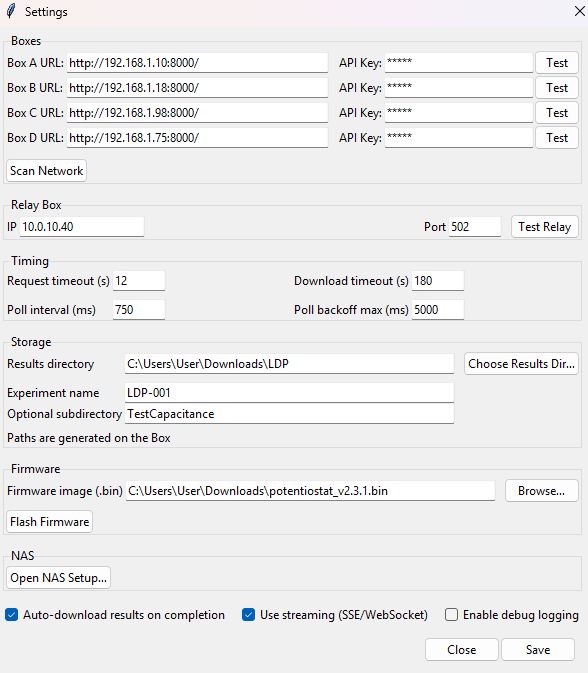
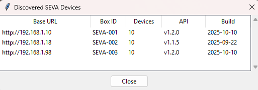
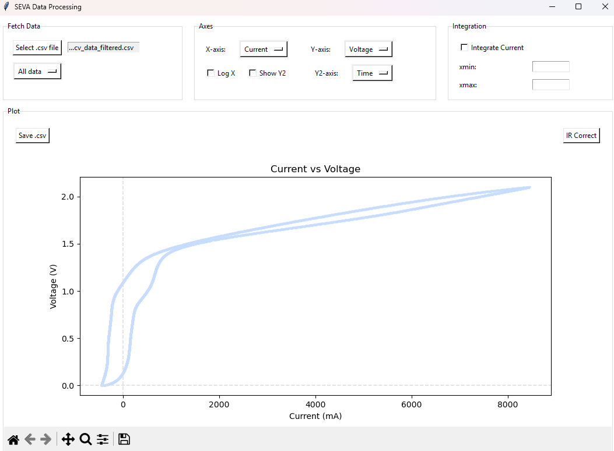

GUI Overview & How to Use (End-User Tutorial)¶
This guide explains the SEVA GUI from an end-user perspective.
- Focus: what is where and what each function is for.
- Scope: complete workflow from setup to download.
- For architecture and code details, see Architecture Overview, SEVA GUI Workflows, and SEVA GUI Classes & Modules.
1) Main window orientation¶
The main window is your starting point.

Toolbar (top)¶
- Start: starts a new run group with the current plate/well configuration.
- Cancel Group: cancels the currently active run group.
- Save Layout / Load Layout: save or restore plate configuration presets.
- Settings: open connectivity, storage, timing, relay, package-update, and NAS options.
- Data Plotter: open the plotting tool for downloaded data.
Tabs (right side)¶
- Experiment: define CV / DC-AC / Cdl / EIS parameters.
- Run Overview: monitor group progress and trigger group download.
- Runs: browse completed/running groups and open their folders.
- Channel Activity: quick per-channel status view.
2) First-time setup (required before starting runs)¶
Open Settings from the toolbar.

Boxes¶
- Enter Box A/B/C/D URL.
- Enter API Key (if required by your deployment).
- Use Test per box to verify connectivity.
- Use Scan Network to discover available devices automatically.
Feature detail: discovery is not a blind scan only. The app uses your configured box URLs as discovery candidates and also derives subnet hints (for example /24) from those URLs, then deduplicates the candidate list before scanning.
Relay box¶
- Configure relay controller IP and Port.
- Use Test Relay to verify relay communication.
Timing¶
- Set request, polling, and download timeout values.
- Keep defaults unless your network/API behavior requires tuning.
Storage¶
- Set local Results directory.
- Set Experiment name and optional subdirectory for organized output.
Package update¶
- Select an update
.zippackage and use Start Remote Update. - The modal update dialog stays open until terminal status and shows backend step + heartbeat updates.
- To build valid packages, use the standalone generator script:
py -3.13 StreamingStandalone/update_zip_generator.py
NAS (advanced / optional)¶
- Use Open NAS Setup... for SMB/NAS upload workflows.
Flags¶
- Auto-download results on completion: downloads automatically when all runs finish.
- Use streaming (SSE/WebSocket): reserved toggle for streaming-capable deployments; default production run monitoring remains polling-based.
- Enable debug logging: increases log detail for diagnostics.
Finish by pressing Save.
Feature detail: saving settings performs validation first. The selected Results directory must exist and be writable, and the app shows an HTTPS warning dialog if box URLs use https:// in environments that commonly run HTTP-only backend endpoints.
3) Optional: discover devices from the network¶
When you run network discovery, this result dialog shows detected SEVA devices.

Use this to confirm that expected boxes are reachable and to validate API/build information.
4) Configure wells and methods¶
4.1 Select wells in the grid¶
Use the well grid to choose which channels/wells should run.

- Reset Well Config: clears configuration for the currently selected well(s).
- Reset all Wells: clears the full plate configuration.
Feature detail: the grid supports several interaction patterns. - Single click selects one well. - Shift+click toggles multi-selection. - Right-click opens a context menu with copy/paste/reset/enable-toggle/open-PNG actions for fast editing flows.
4.2 Set experiment parameters¶
In the Experiment tab, define methods and parameters.

Available sections:
- Cyclic Voltammetry (CV)
- Electrolysis (DC/AC)
- Capacitance (Cdl)
- Impedance (EIS)
Key actions:
- Enable/disable each method using its checkbox.
- Edit numeric parameters and control mode/targets where applicable.
- Update Parameters applies values to selected wells.
- End Selection ends the current selection workflow.
- End Task ends active task context from the panel.
5) Start and monitor a run¶
5.1 Start¶
From the toolbar, click Start.
5.2 Run Overview tab¶
Use Run Overview to monitor active progress and status.

- Top cards show status per box (A/B/C/D).
- Table shows per-well information (phase, mode, progress, remaining time, last error, sub-run ID).
- Download Group triggers a full group results download.
Feature detail: if a row contains a long error message, double-click that row to open a full error dialog and copy the text (useful for support/tickets).
5.3 Channel Activity tab¶
Use Channel Activity for quick channel-state visibility.

6) Manage run history and download folders¶
In the Runs tab, manage existing run groups.

- Open Folder: opens the selected run group directory.
- Cancel: requests cancel for selected running group.
- Delete: removes selected row(s) from the list/history view.
Feature detail: - Action buttons are enabled only when a row is selected. - Cancel/Delete actions include confirmation dialogs in active-run cases. - This tab is intended for post-start run lifecycle management (open, cancel, remove history entries).
Table columns include group ID, name, status, progress, boxes, start time, and download path.
7) Plot and export data¶
Open Data Plotter from the toolbar after data is available locally.

Typical use:
- Select your CSV input.
- Choose axis options and optional integration controls.
- Apply optional IR correction.
- Save/export the resulting data/plots.
This view is focused on plotting and export operations from already downloaded data.
8) Optional advanced workflow: NAS setup¶
Use NAS setup if your process requires SMB upload/retention handling.

Typical fields:
- API connection (Base URL + API key)
- SMB host/share/credentials
- Retention days
- Manual upload by run ID
- Health checks and server response panel
Use this only when your lab flow includes NAS archiving.
9) Typical end-to-end workflow (quick checklist)¶
- Open Settings and configure box URLs/API keys.
- Test connectivity (and relay if used).
- Set results directory and save settings.
- Select wells in Well Grid.
- Configure methods in Experiment and apply parameters.
- Click Start.
- Monitor in Run Overview and Channel Activity.
- Download via Download Group (or auto-download).
- Open files in Runs tab.
- Optional: inspect/export in Data Plotter.
If anything fails, see Troubleshooting.